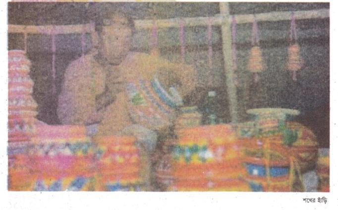
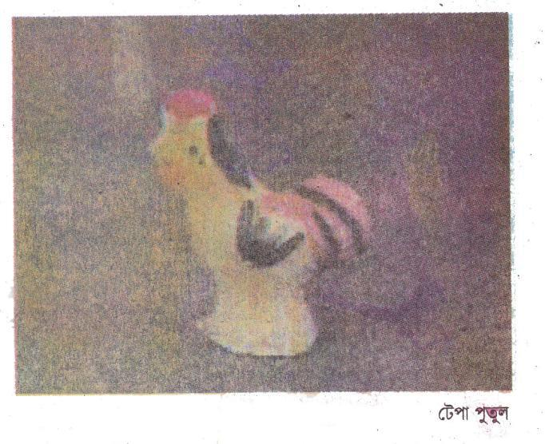
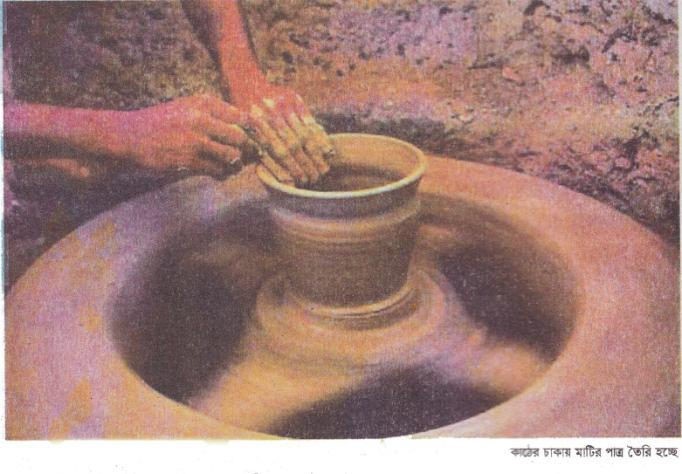

শখের মৃৎশিল্প
গ্রামের নাম আনন্দপুর। মামার বাড়ি। কথায় আছে, মামার বাড়ি রসের হাঁড়ি। আসলেই তাই পড়া নেই, বাধা নেই, যেখানে খুশি ঘুরে বেড়াও, যা খুশি খাও। এই তো মামার বাড়ি। গেল বছর পয়লা বৈশাখের ছুটিতে গিয়েছিলাম আনন্দপুর। সেখানে পয়লা বৈশাখে মেলা বসে। মামা বললেন, তোমাদের মেলা দেখাতে নিয়ে যাব।

আমরা ছিলাম চার জন-আমি, মামাতো বোন বৃষ্টি, সোহানা আর ছোটভাই তাজিন। মেলা বসে সকালে। আমরা একটু দেরি করেই গেলাম। মামা বেশ মজার মানুষ। কাঁধে ঝোলানো একটা ব্যাগ। তাতে থাকে ছবি আঁকার জিনিস, থাকে একটা বাঁশি। পড়েন ঢাকার চারুকলা ইনস্টিটিউটে। মেলার একটু কাছে পৌঁছতেই শুনতে পেলাম নাগরদোলার ক্যাঁচার ক্যাঁচর শব্দ। দেখলাম বাঁশের তৈরি কুলো, ডালা, ঝুড়ি, চালুন, মাছ ধরার চাঁই, খালুই। আরও কত কী! বসেছে বাঙি, তরমুজ, মুড়ি-মুড়কি, জিলাপি আর বাতাসার দোকান সারি সারি। আরেকটু এগুতেই দেখতে পেলাম কত রঙের, কত বর্ণের বিচিত্র সব মাটির হাঁড়ি। ফুল, পাতা, মাছের ছবি আঁকা সে সবে। রয়েছে মাটির ঘোড়া, হাতি, ষাঁড় আর নানা আকারের মাটির পুতুল। আমার চোখ পড়ল কাজ করা অপূর্ব সুন্দর মাটির হাঁড়ির দিকে। মামাকে জিজ্ঞেস করলাম-এটা কিসের হাঁড়ি?
৩৫মামা বললেন এটা শখের হাঁড়ি। শখ করে পছন্দের জিনিস এই সুন্দর হাঁড়িতে রাখা হয়। তাই এর নাম শখের হাঁড়ি। তাছাড়া শখের যে কোনো জিনিসই তো সুন্দর।
আমরা দুটি শখের হাঁড়ি কিনলাম। অবাক হলাম, পুতুলের পাশেই ঘোলা চোখে চেয়ে আছে এক চকচকে রুপালি ইলিশ। পদ্মার তাজা ইলিশের মতোই। তেমনি সাদা আঁশ, লাল ঠোঁট। আমরা একটা মাটির ইলিশও কিনলাম। মামা বলেলেন, ওই যে পুতুলগুলো দেখছ ওগুলো টেপা পুতুল। নরম এঁটেল মাটি টিপে টিপে এসব পুতুল বানানো হয়। যেমন- বই জামাই, কৃষক, নথপরা ছোট্ট মেয়ে-নানা রকমের মাটির টেপা পতুল। মেলার এক প্রান্তে বড় জায়গা জুড়ে এসব মাটির পুতুলের দোকান। মামা বললেন, এগুলো হচ্ছে মাটির শিল্পকলা। মামা বুঝিয়ে বলেলেন – যখন কোনো কিছু সুন্দর করে আঁকি বা বানাই অথবা গাই, তখন তা হয় শিল্প। আমাদের দেশের সবচেয়ে প্রাচীন শিল্প হচ্ছে মাটির শিল্প। এ দেশের কুমোর সম্প্রদায় যুগ যুগ ধরে তৈরি করে আসছে মাটির জিনিস।
যেমন – কলস, হাঁড়ি, সরা, বাসনকোসন, পেয়ালা, সুরাই, মটকা, জালা, পিঠে তৈরির নানা ছাঁচ। আরও কত কী!

মাটির তৈরি শিল্পকর্মকে আমরা বলি মাটির শিল্প বা মৃৎশিল্প। এ শিল্পের প্রধান উপকরণ হলো মাটি। তবে সব মাটি দিয়ে এ কাজ হয় না। দরকার পরিষ্কার এঁটেল মাটি। এধরনের মাটি বেশ আঠালো। দোঁআশ মাটি তেমন আঠলো নয়। আর বেলে মাটি তো ঝরঝরে- তাই এগুলো দিয়ে মাটির শিল্প হয় না। এঁটেল মাটি হলেই যে তা দিয়ে শিল্পের কাজ করা যাবে তাও নয়। এর জন্য অনেক যত্ন আর শ্রম দরকার। দরকার হাতের নৈপুণ্য ও কারিগরি জ্ঞান। কুমোরদের কাছে এসব খুব সহজ। কারণ তারা বংশ পরম্পরায় এ কাজ করে আসছে।
৩৬
আবার এ কাজের জন্য প্রয়োজন কিছু ছোটখাটো যন্ত্রপাতি ও সরঞ্জাম। সবকিছুর আগে যেটা দরকার তা হলো একটা কাঠের চাকা। এই চাকায় নরম মাটির তাল লাগিয়ে নেন কুমোররা। তারপর চাকাটি জোরে ঘোরান। আর হাত দিয়ে মাটির তাল ধরেন। এভাবে নানা আকারের মাটির পাত্র ও নানা জিনিস তৈরি করেন কুমোররা।
মেলা থেকে সেদিন আমরা অনেক টেপা পুতুল, ঘোড়া, হাতি, ছোট কলস কিনলাম। মামা বললেন, এত সুন্দর নকশা দেখছ, রং দেখছ এ সবই গ্রামের শিল্পীদের তৈরি। নকশাগুলো তারা মন থেকে আঁকে। আর রং তৈরি করে শিম, সেগুন পাতার রস, কাঁঠাল গাছের বাকল থেকে। তবে আজকাল বাজার থেকে কেনা রংও লাগনো হয়। মেলা থেকে কদমা, বাতাসা, মুড়কি আর খৈ কিনে শখের হাঁড়ি ভর্তি করে আমরা ফিরলাম। খুব মজা হলো।
মামা বললেন, তোমাদের কাল কুমোরপাড়ায় নিয়ে যাব। পরদিন আমরা দেখতে গেলাম কুমোরপাড়া। আনন্দপুর গ্রামের উত্তর দিকে আট দশ ঘর বসতবাড়ি। এই নিয়ে কুমোরপাড়া। এখানে সবাই ব্যস্ত। কেউ মাটির তাল চাক করে সাজিয়ে রাখছেন। কেউ-বা কাঠের চাকায় মাটি লাগিয়ে নানা আকারের পাত্র বানাচ্ছেন। কেউ-বা এগুলো সার সার করে শুকোতে দিচ্ছেন রোদে। পাশেই রয়েছে মাটির জিনিস পোড়ানোর চুলা। উঁচু ছোট্ট ঢিবির মতো এই চুলা। মাটির পোড়া গন্ধ পাচ্ছি।
৩৭আর ধোঁয়া বেরুচ্ছে। ছোট ছোট ছেলেমেয়েরাও এ কাজ করছে। মামা বললেন, হাঁড়ি কলসি ছাড়াও আমাদের দেশে এক সময় সুন্দর পোড়ামাটির ফলকের কাজ হতো। এর অন্য নাম টেরাকোটা। বাংলার অনেক পুরনো শিল্প এই টেরাকোটা। নকশা করা মাটির ফলক ইটের মতো পুড়িয়ে তৈরি করা হতো এই টেরাকোটা। শালবন বিহার, মহাস্থানগড়, পাহাড়পুর বৌদ্ধ বিহার ও দিনাজপুরের কান্তজির মন্দিরে এই টেরাকোটার কাজ রয়েছে। মাটির ফলকে ছবি এঁকে শুকিয়ে পোড়ানোর পর এগুলো এমন সুন্দর হয়ে ওঠে! ছোট ছোট ফলককে পাশাপাশি জোড়া দিয়ে বড় করা যায়। পোড়ামাটির এই ফলক বাংলার প্রাচীন মৃৎশিল্প। মামা বললেন, টেরাকোটা বা পোড়ামাটির এসব কাজ এ দেশে শুরু হয়েছে হাজার বছর আগে।
আজকাল কি পোড়ামাটির এই শিল্পচর্চা হয় না? মামার কাছে জানতে চাইলাম আমরা। মামা বললেন, আজকাল ওরকম টেরাকোটা হচ্ছে না বটে, তবে পোড়ামাটির নকশার কদর বেড়েছে। সরকারী-বেসরকারী ভবনে আজকাল সৌন্দর্য বাড়ানোর জন্য নানা রকম নকশা করা মাটির ফলক ব্যবহৃত হচ্ছে। আমাদের দেশের কুমোররা এসব তৈরি করছেন। বললাম, আমরা এসব পোড়ামাটির কাজ দেখতে চাই।
মামা বললেন, সুযোগ মতো এক সময় তোমাদের শালবন বিহারে নিয়ে যাব।
- সংগৃহীত
অনুশীলনী
১. শব্দগুলো পাঠ থেকে খুঁজে বের করি। অর্থ বলি।
|
শখ |
টেপা পুতুল |
নকশা |
শালবন বিহার |
|
টেরাকোটা |
মৃৎশিল্প |
শখের হাঁড়ি | |
২. ঘরের ভিতরের শব্দগুলো খালি জায়গায় বসিয়ে বাক্য তৈরি করি।
|
শখ |
নকশা |
মৃৎশিল্প |
টেপা পুতুল |
ক. এই যে […………………………….] দেখছ, এসবই গ্রামের শিল্পীদের তৈরি।
খ. মাটির পুতুল জমানো আমার একটি [………………………………………… ..]।
গ. মাটির তৈরি শিল্পকর্মকে [……………………………………………………] বলে।
ঘ. আমরা মেলা থেকে অনেক […………………………………………………] কিনলাম।
৩৮৩. ঠিক উত্তরটিতে টিক () দিই।
ক. আনন্দপুরে কখন মেলা বসে?
১. ষোলই ডিসেম্বর
২. পয়লা বৈশাখ
৩. একুশে ফেব্রুয়ারি
৪. পহেলা ফাল্গুন
খ. মামা কোথায় পড়েন?
১. ঢাকা কলেজে
২. রাজশাহী বিশ্ববিদ্যালয়ে
৩. ঢাকার চারুকলা ইনস্টিটিউটে
৪. চট্টগ্রামের চারুকলা ইনস্টিটিউটে
গ. মৃৎশিল্পের সবচেয়ে প্রাচীন উপাদান হচ্ছে –
১. বাঁশ
২. কাঠ
৩. পানি
৪. মাটি
ঘ. আমাদের সবচেয়ে প্রাচীন শিল্প হচ্ছে-
১. চারুশিল্প
২. মৃৎশিল্প
৩. কারু শিল্প
৪. দারুশিল্প
ঙ. কুমোর সম্প্রদায় কিসের কাজ করেন-
১. বাঁশের কাজ
২. কাঠের কাজ
৩. পাকা বাড়ির কাজ
৪. মাটির কাজ
চ. গ্রামের শিল্পীরা রং তৈরি করেন-
১. আম ও লাউ পাতা থেকে
২. শিম ও কাঁঠাল গাছের বাকল থেকে
৩. সরিষা ফুল থেকে
৪. পান ও চুন থেকে
ছ. পোড়া মাটির ফলকের অন্য নাম-
১. টেপা পুতুল
২. টেরাকোটা
৩. শখের হাঁড়ি
৪. মৃৎশিল্প
৩৯৪. নিচের প্রশ্নগুলোর উত্তর বলি ও লিখি।
ক. মাটির শিল্প বলতে কী বুঝি?
খ. বাংলাদেশের প্রাচীন শিল্পকর্ম কোনটি?
গ. শখের হাঁড়ি কী রকম?
ঘ. বৈশাখী মেলায় কী কী পাওয়া যায়?
ঙ. মৃৎশিল্পের প্রধান উপাদান কী?
চ. কয়েকটি মৃৎশিল্পের নাম বলি।
ছ. টেরাকোটা কী?
জ. বাংলাদেশের কোথায় পোড়ামাটির প্রাচীন শিল্প দেখতে পাওয়া যায়?
ঝ. মাটির শিল্প কেন আমাদের ঐতিহ্য ও গৌরবের বিষয়?
ঞ. মামার বাড়ি রসের হাঁড়ি-প্রচলিত এই কথাটি দিয়ে কী বোঝানো হয়?
৫. নিচের অনুচ্ছেদটি পড়ি এবং প্রশ্নগুলোর উত্তর লিখি।
যখন কোনো কিছু সুন্দর করে আঁকি বা বানাই অথবা গাই, তখন তা হয় শিল্প। শিল্পের এ কাজকে বলে শিল্পকলা। আমাদের দেশের সবচেয়ে প্রাচীন শিল্প হচ্ছে মাটির শিল্প। এ দেশের কুমোর সম্প্রদায় যুগ যুগ ধরে তৈরি করে আসছেন মাটির জিনিস, যেমন– কলস, হাঁড়ি, সরা, বাসনকোসন, পেয়ালা, সুরাই, মটকা, জালা, পিঠে তৈরির নানা ছাঁচ। আরও কত কী! মাটির তৈরি শিল্পকর্মকে আমরা বলি মাটির শিল্প বা মৃৎশিল্প। এ শিল্পের প্রধান উপকরণ হলো মাটি। মাটি হলেই যে তা দিয়ে শিল্পের কাজ করা যাবে তাও নয়। এর জন্য অনেক যত্ন আর শ্রম দরকার। দরকার হাতের নৈপুণ্য ও কারিগরি জ্ঞান। কুমোরদের কাছে এসব খুব সহজ। কারণ তাঁরা বংশ পরম্পরায় এ কাজ করে আসছেন।
ক. শিল্পকলা বলতে কী বোঝ?
খ. শিল্পের কাজের জন্য কী কী প্রয়োজন?
গ. কেন কুমোরদের কাছে এসব কাজ সহজ?
৬. নিচের প্রশ্নগুলো দিয়ে যা বুঝি তা লেখ।
ক. মৃৎশিল্প
গ. টেরাকোটা
খ. শখের হাঁড়ি
ঘ. টেপা পুতুল
৪০৭. নিচের কথাগুলো বুঝে নিই।
|
কান্তজির মন্দির - |
১৯৫২ খ্রিষ্টাব্দে মহারাজা রামনাথ রায় দিনাজপুরের কান্তজির মন্দির নির্মাণ করেন। এ মন্দিরের গায়ে স্থাপিত অপূর্ব সুন্দর টেরাকোটা বাংলার মাটির শিল্পের প্রাচীন নিদর্শন। |
|
পাহাড়পুর - |
নওগাঁ জেলার পাহাড়পুরে আবিষ্কৃত হয়েছে প্রাচীন বৌদ্ধ সভ্যতার নিদর্শন সোমপুর বিহার। এই সোমপুর বিহারের আশ-পাশের বড় বৌদ্ধ মন্দিরে পাওয়া গেছে অনেক সুন্দর টেরাকোটা। এগুলো অষ্টম শতকের অর্থাৎ আজ থেকে প্রায় বার শ বছর আগের তৈরি। |
|
শালবন বিহার - |
কুমিল্লার ময়নামতিতে মাটি খুঁড়ে আবিষ্কৃত হয়েছে প্রাচীন বৌদ্ধ সভ্যতার নিদর্শন। অষ্টম শতকের এই পুরাকীর্তি বাংলাদেশের প্রাচীন সভ্যতার পরিচায়ক। শালবন বিহারে পাওয়া গেছে নানা ধরনের পোড়ামাটির ফলক। |
|
মহাস্থানগড় - |
বগুড়া শহর থেকে ১২ কিলোমিটার উত্তরে করতোয়া নদীর তীরে অবস্থিত মহাস্থানগড়। যীশু খ্রিষ্টের জন্মের পূর্বে তৃতীয় থেকে পনের শতকে বাংলার এ প্রাচীন নগর গড়ে ওঠে। মহাস্থানগড়ে পাওয়া গেছে অনেক পোড়ামাটির ফলক, পাত্র, অলংকার ও মূর্তি। |
৮. কর্ম-অনুশীলন।
আমার দেখা কুমোরপাড়ার সংক্ষিপ্ত বর্ণনা দিই।
অথবা
আমার দেখা কোনো হস্তশিল্প বা হাতের কাজ সম্পর্কে লিখি।
৪১